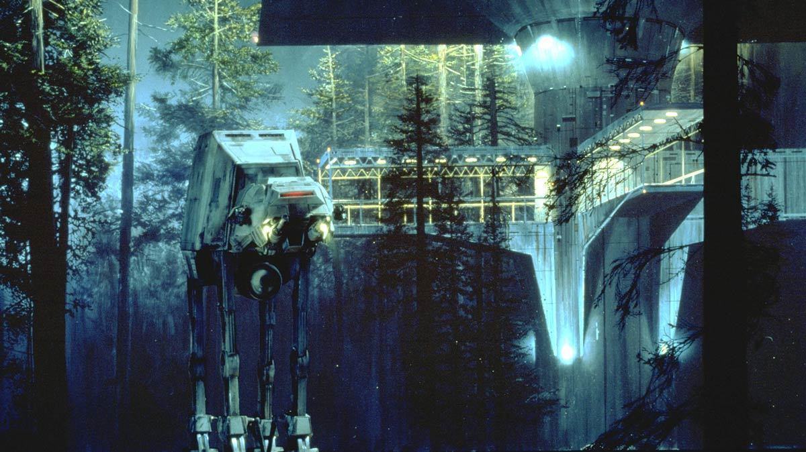

L’AT-AT (Transport Tout Terrain Blindé en français) est un colosse blindé monté sur quatre pattes massives, il est conçu pour traverser les terrains les plus hostiles et instiller la peur chez l'ennemi par sa simple présence. Souvent utilisé pour des assauts terrestres, l’AT-AT est surtout connu pour sa participation décisive à la bataille de Hoth, où sa puissance a écrasé les défenses rebelles.
|  |